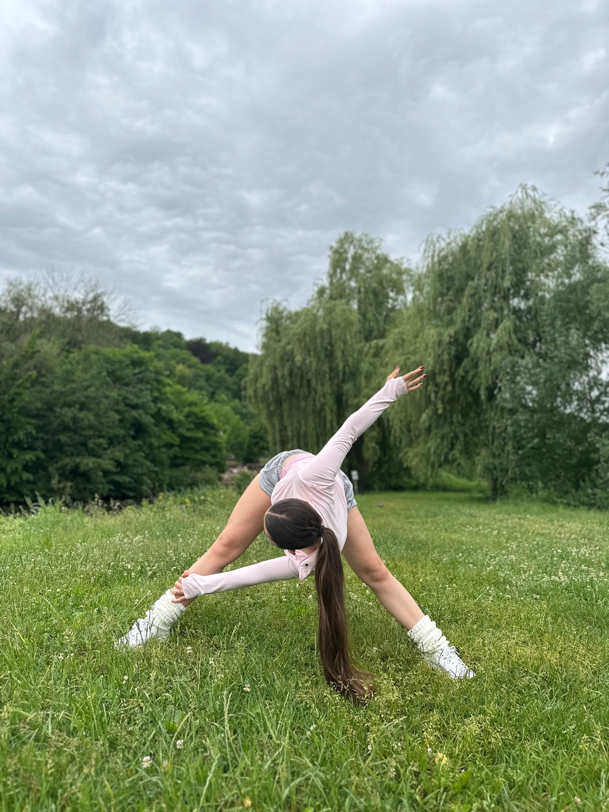

Майрафон
«Тело мечты»
Самое время превратить тело своей мечты в реальность. Занимайся дома и стань лучшей версией себя.
ПЕРЕЙТИ К ОФОРМЛЕНИЮСамое время превратить тело своей мечты в реальность. Занимайся дома и стань лучшей версией себя.
 ПЕРЕЙТИ К ОФОРМЛЕНИЮСамое время превратить тело своей мечты в реальность. Занимайся дома и стань лучшей версией себя.
ПЕРЕЙТИ К ОФОРМЛЕНИЮПрограмма на май, составленная по тренировкам, записанным специально для марафона.
Здоровые привычки, которые нам нужно ввести на этот месяц (да и вообще в дальнейшем), с пояснениями + мотивационное сообщение от меня.
План питания, чтобы не приходилось самой придумывать, что поесть, и подборка здоровых рецептов также включены.
Эффективные полноценные тренировки, записанные мной с озвучкой специально для марафона.
Доступ к материалам этого марафона останется у тебя НАВСЕГДА. Если по какой-то причине у тебя не получится пройти его сейчас, ты сможешь сделать это когда угодно позже. Но купить этот продукт можно ТОЛЬКО сейчас.
В составе курса уникальная тренировка на пластичность и сексуальность. Как чемпионка Европы по танцам я точно знаю, как раскрыть женскую энергию через пластику тела и стать более гибкой и грациозной.
7 полноценных тренировок для разных целей, направленных на построение нашего не только худого, но и сильного, подтянутого и функционального тела.
Программа на май, составленная по тренировкам, записанным специально для марафона.
Здоровые привычки, которые нам нужно ввести на этот месяц (да и вообще в дальнейшем), с пояснениями + мотивационное сообщение от меня.
План питания, чтобы не приходилось самой придумывать, что поесть, и подборка здоровых рецептов также включены.
Эффективные полноценные тренировки, записанные мной с озвучкой специально для марафона.
Доступ к материалам этого марафона останется у тебя НАВСЕГДА. Если по какой-то причине у тебя не получится пройти его сейчас, ты сможешь сделать это когда угодно позже. Но купить этот продукт можно ТОЛЬКО сейчас.
В составе курса уникальная тренировка на пластичность и сексуальность. Как чемпионка Европы по танцам я точно знаю, как раскрыть женскую энергию через пластику тела и стать более гибкой и грациозной.
Разработала свою систему комплексного подхода к спорту, питанию и режиму, основанную на личном опыте, благодаря которой девушки улучшают фигуру, самочувствие, внутреннее состояние и создают баланс между всеми сферами для счастливой яркой жизни.
Трансформирую мышление, заряжаю своей энергией девушек из разных стран на комплексную трансформацию!
Помогаю обрести фигуру твоей мечты без загонов, без срывов, без запретов и получить долгосрочный результат и образ жизни, который ты сможешь продолжать, а не единоразовую акцию, которая продлится только месяц.